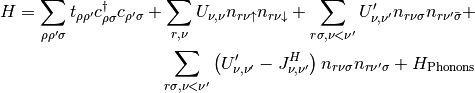

Introduction¶
ctmo stands for Continuous time multi-orbital.
Sorry the docs are pretty bad for now.
Conventions¶
Comments¶
- We use the convention “$” for the start of a shell command and “#” for commenting shell commands, etc.
- Ex:
- $ cd path/to/thing # change to the path of thing.
Executable names¶
There are two main executables: ctmo and ctmo_DCA. The first executable uses the Cluster Dynamical mean field theory, whereas the second executable uses Dynamical mean field theory.
Hamiltonian¶
The hamiltonian is a density-density type hamiltonian with phonon coupling (Notice the + sign for the hopping term):

Important notes for the actual implementation:
- For now, we permit a relatively generic hopping matrix.
- The value of the interactions are not general yet, only one U, U’ and J_H are permitted for now.
- Only one value (independant of the orbital index) is permitted for the phonon frequency and electron-phonon coupling.